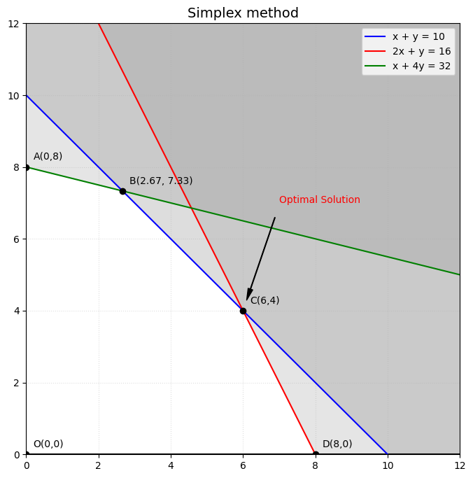

Linear Programming: Phương pháp Interior Point
Posted: 09/07/2026
Trong bài viết trước, chúng ta đã tìm hiểu hai phương pháp giải bài toán quy hoạch tuyến tính bằng Đồ thị và Simplex. Cả hai đều có điểm chung là đi dọc theo biên của miền khả thi (feasible region) để tìm nghiệm tối ưu tại các đỉnh (vertex). Bài viết này giới thiệu một hướng tiếp cận hoàn toàn khác: phương pháp Interior Point. Thay vì bám theo biên, ta xuất phát từ một điểm bên trong miền khả thi và tiến dần đến nghiệm tối ưu theo một đường cong xuyên qua feasible region.
Bài viết này sẽ trình bày các phần toán liên quan (barrier function, gradient, Newton step, KKT condition), sau đó là Python code từng bước để bạn thấy rõ quá trình hội tụ qua mỗi vòng lặp.
1. Lịch sử ra đời
Simplex hoạt động rất hiệu quả trong thực tế và đã được sử dụng rộng rãi từ năm 1947. Tuy nhiên, năm 1972, Victor Klee và George Minty đã chứng minh: tồn tại những lớp bài toán LP mà Simplex buộc phải duyệt qua tất cả \(2^n\) đỉnh của feasible region trước khi tìm ra nghiệm. Với bài toán chỉ 200 biến, con số đó là \(2^{200} \approx 10^{60}\) bước lặp, và không máy tính nào có thể giải nổi. Đây là research gap để thúc đẩy các nhà toán học tìm kiếm một thuật toán tốt hơn.
Năm 1984, Karmarkar công bố một hướng tiếp cận hoàn toàn khác: thay vì đi dọc theo biêncủa feasible region qua các đỉnh, ông đề xuất xuất phát từ một điểm bên trong và di chuyển xuyên qua lòng feasible region theo một đường cong mượt mà tiến dần đến nghiệm tối ưu. Đây chính là nền tảng của phương pháp Interior Point mà ta đang sử dụng ngày nay. Karmarkar chứng minh thuật toán của ông có độ phức tạp đa thức \(O(n^{3.5})\), nghĩa là số bước lặp tăng theo hàm đa thức của số biến chứ không phải hàm mũ, và quan trọng hơn, nó cũng chạy nhanh trong thực tế. Đây là lần đầu tiên một phương pháp LP có cả hai tính chất này cùng lúc, và nó mở ra một kỷ nguyên mới trong tối ưu hóa.
Cần lưu ý rằng những bài toán "xấu" kiểu Klee-Minty rất hiếm gặp trong thực tế, nên Simplex vẫn được dùng rộng rãi và thường chạy rất nhanh. Interior Point thường được sử dụng ở những bài toán quy mô cực lớn (hàng triệu biến/ràng buộc) hoặc khi cần đảm bảo lý thuyết chắc chắn về số bước hội tụ. Hiểu cả hai phương pháp giúp bạn biết khi nào nên dùng cái gì và đọc được output của các solver chuyên nghiệp.
2. Nhắc lại bài toán Simplex
Để hiểu Interior Point, chúng ta hãy xem lại cách mà Simplex hoạt động. Nếu bạn chưa nắm rõ, hãy đọc lại bài viết trước tại đây. Mình sử dụng lại bài toán người nông dân:
Simplex đã di chuyển qua 3 đỉnh theo thứ tự: \(O(0,0) \to E(8,0) \to D(6,4)\). Mỗi bước là một bước nhảy từ đỉnh này sang đỉnh kề, luôn nằm trên biên của feasible region. Interior Point thì khác hoàn toàn: nó xuất phát từ một điểm nằm bên trong feasible region và di chuyển theo một đường cong mượt mà, không bao giờ chạm vào biên cho đến khi hội tụ.

3. Lý thuyết cơ bản
Trong bài viết này, mình giới thiệu cho các bạn phương pháp cơ bản nhất của Interior Point là Barrier Method. Có nhiều biến thể khác nhau, nhưng tất cả đều dựa trên ý tưởng chung: thay thế ràng buộc bất phương trình bằng một barrier function, sau đó dùng Newton step để tối ưu hóa bài toán được sửa đổi này.
3.1. Bài toán dạng chuẩn và Barrier Function
Đầu tiên, ta đưa bài toán về dạng tối thiểu hóa (để thống nhất ký hiệu toán học), bằng cách đổi dấu hàm mục tiêu:
Ý tưởng của Interior Point là thay thế các ràng buộc bất phương trình bằng một barrier function được cộng vào hàm mục tiêu. Barrier function phổ biến nhất là logarithmic barrier:
Khi nghiệm tiếp cận bất kỳ biên nào, ví dụ \(x + y \to 10\), thì \(-\ln(10 - x - y) \to +\infty\), tạo ra "bức tường vô hình" đẩy lùi nghiệm. Như vậy, thay vì giải bài toán gốc, ta giải bài toán sửa đổi có tham số \(\mu > 0\):
Khi \(\mu\) lớn, barrier chiếm ưu thế và nghiệm nằm sâu bên trong feasible region. Khi \(\mu \to 0\), barrier mờ dần và nghiệm của bài toán sửa đổi hội tụ về nghiệm tối ưu của bài toán gốc. Quá trình giảm \(\mu\) dần tạo ra một chuỗi nghiệm trung gian gọi là central path.
3.2. Điều kiện tối ưu: Gradient bằng 0
Với mỗi giá trị \(\mu\) cố định, ta cần tìm điểm cực tiểu của \(\phi_\mu(x, y)\). Điều kiện cần là gradient bằng 0:
Tính gradient theo từng biến:
Đây là hệ phương trình phi tuyến, không có nghiệm dạng đóng. Ta dùng phương pháp Newton để giải.
3.3. Newton Step
Phương pháp Newton xấp xỉ hệ gradient tại điểm hiện tại \((x_k, y_k)\) sau đó giải hệ tuyến tính thu được để xác định updated \(\Delta \mathbf{x}\):
Trong đó \(H_\mu\) là ma trận Hessian (đạo hàm bậc hai) của \(\phi_\mu\):
Với \(s_1 = 10 - x - y\), \(s_2 = 16 - 2x - y\), \(s_3 = 32 - x - 4y\) là các giá trị slack (khoảng cách đến biên). Sau khi giải hệ tuyến tính, ta cập nhật:
Trong đó \(\alpha \in (0, 1]\)) là step size, được chọn đủ nhỏ để đảm bảo điểm mới vẫn nằm bên trong feasible region (tức là tất cả các slack \(s_i > 0\) và \(x, y > 0\)).
3.4. Điều kiện tối ưu KKT
Khi \(\mu \to 0\), nghiệm của bài toán barrier hội tụ về nghiệm thỏa mãn điều kiện Karush-Kuhn-Tucker (KKT condition), đây là điều kiện cần và đủ cho bài toán LP lồi. KKT gồm 4 điều kiện, tất cả phải thỏa mãn đồng thời tại nghiệm tối ưu \((x^*, y^*)\):
(1) Primal feasibility: nghiệm phải nằm trong feasible region:
(2) Dual feasibility: các nhân tử Lagrange phải không âm:
Điều kiện này phản ánh ý nghĩa vật lý: ràng buộc chỉ có thể đẩy nghiệm vào trong feasible region, không thể kéo ra ngoài. Trong Interior Point, \(\lambda_i\) được xấp xỉ tự nhiên bởi \(\lambda_i \approx \mu / s_i\), luôn $>0$ vì \(\mu > 0\) và \(s_i > 0\).
(3) Stationarity: gradient của Lagrangian bằng 0:
Đây chính là hệ gradient \(\nabla \phi_\mu = 0\) mà ta đã viết ở phần 3.2, khi thay \(\lambda_i = \mu / s_i\) và đưa \(\mu \to 0\). Hai điều kiện này liên kết chặt chẽ với nhau: phần 2.2 chính là cách Interior Point "thực thi" điều kiện stationarity qua từng vòng lặp.
(4) Complementary slackness: ràng buộc active thì nhân tử khác 0, và ngược lại:
Nếu một ràng buộc không active (slack \(s_i > 0\)) thì buộc \(\lambda_i = 0\); nếu \(\lambda_i > 0\) thì ràng buộc đó phải active (tight). Trong barrier method, điều kiện này được đảm bảo tự động: tích \(\lambda_i \cdot s_i = \mu / s_i \cdot s_i = \mu \to 0\).
Áp dụng vào ví dụ, tại nghiệm tối ưu \((x^*=6, y^*=4)\):
- Ràng buộc (1): \(6 + 4 = 10\), active \((s_1 = 0)\). Nhân tử \(\lambda_1 > 0\).
- Ràng buộc (2): \(2(6) + 4 = 16\), active \((s_2 = 0)\). Nhân tử \(\lambda_2 > 0\).
- Ràng buộc (3): \(6 + 4(4) = 22 < 32\), không active \((s_3 = 10 > 0)\). Nhân tử \(\lambda_3 = 0\).
3.5. Duality Gap: tiêu chí dừng của thuật toán
Khi đã có 4 điều kiện KKT, một câu hỏi thực tế đặt ra:làm sao biết thuật toán đã đủ gần nghiệm tối ưu để dừng lại? Lý thuyết đối ngẫu (duality) của LP cho phép xây dựng một bài toán đối ngẫu (dual problem). Với mọi cặp nghiệm primal khả thi \(x\) và dual khả thi \(\lambda\), giá trị hàm mục tiêu dual luôn là upper bound của primal (với bài toán max). Khoảng cách giữa hai giá trị đó gọi là duality gap:
Tại nghiệm tối ưu, strong duality đảm bảo gap \(= 0\). Điều đặc biệt của barrier method là tại mỗi điểm trên central path với tham số \(\mu\), có thể tính ra một nghiệm dual khả thi tường minh bằng \(\lambda_i = \mu / s_i\). Thay vào công thức gap, ta thu được kết quả rất gọn:
Với \(m\) là số ràng buộc \(Ax \leq b\) và \(n\) là số biến (ràng buộc \(x \geq 0\)). Trong bài toán của chúng ta, \(m = 3\) và \(n = 2\), nên \(\text{gap} = 5\mu\). Công thức này nói lên hai điều quan trọng:
- Ý nghĩa thực tế: tại mỗi vòng lặp, nghiệm hiện tại cách giá trị tối ưu thực sự nhiều nhất \(5\mu\) đơn vị. Đây là đảm bảo định lượng, không chỉ là cảm tính.
- Tiêu chí dừng chuẩn: thay vì đo \(|\nabla\phi_\mu|\) (phụ thuộc vào đơn vị và scaling), các solver thực tế dừng khi \(\text{gap} = (m+n)\mu < \varepsilon\), tức là khi \(\mu < \varepsilon\,/\,(m+n)\).
Xác nhận bằng số: với \(\mu_0 = 10\) và \(\mu_{\text{reduce}} = 0.2\), sau \(k\) vòng lặp ngoài ta có \(\mu_k = 10 \times 0.2^k\). Để đạt \(\text{gap} < \varepsilon\), cần:
Ví dụ, để đạt \(\varepsilon = 10^{-6}\) chỉ cần khoảng \(\log(5 \times 10^7) / \log 5 \approx 11\) vòng lặp, khớp đúng với kết quả quan sát được trong bảng output. Đây chính là nguồn gốc của độ phức tạp \(O(\log(1/\varepsilon))\) của Interior Point.
4. Thuật toán và quá trình hội tụ
Trước khi đi vào code Python, hãy nhìn toàn bộ thuật toán dưới dạng pseudocode để thấy rõ cấu trúc hai vòng lặp lồng nhau và mối liên hệ với các bước toán học ở phần 3.
Algorithm: Logarithmic Barrier Interior Point Method
Input: c, A, b (objective and constraints: max c'x s.t. Ax <= b, x >= 0)
x0 (starting point strictly inside feasible region)
mu0, rho (initial barrier parameter, reduction ratio in (0,1))
eps (stopping tolerance)
Output: x* (optimal solution)
1: x <- x0, mu <- mu0
2: while (m + n) * mu >= eps do
3: /* Outer loop: solve barrier subproblem for current mu */
4: repeat
5: /* Inner loop: Newton step */
6: g <- grad( phi_mu(x) ) /* gradient of barrier objective */
7: H <- hessian( phi_mu(x) ) /* Hessian of barrier objective */
8: dx <- solve( H * dx = -g ) /* Newton direction */
9: alpha <- backtrack(x, dx) /* step size: keep x in interior */
10: x <- x + alpha * dx
11: until ||g|| is small enough
12: mu <- rho * mu /* shrink barrier, gap = (m+n)*mu */
13: end while
14: return x*, Z* = c' * x*
Hai vòng lặp lồng nhau phản ánh đúng cấu trúc toán học đã trình bày ở phần 2: vòng ngoài điều khiển tham số \(\mu\) (mỗi lần giảm \(\mu\) là một lần thu hẹp duality gap), vòng trong dùng Newton step để tìm điểm tối ưu của bài toán barrier với \(\mu\) cố định. Kết quả là một chuỗi điểm liên tiếp trên central path, mỗi điểm gần nghiệm tối ưu hơn điểm trước, cho đến khi gap đủ nhỏ thì dừng.
Bây giờ ta xây dựng thuật toán hoàn chỉnh từ các bước toán học trên. Đoạn code dưới đây lập trình lại toàn bộ vòng lặp barrier-Newton từ đầu, in ra từng bước lặp để bạn thấy nghiệm và giá trị hàm mục tiêu hội tụ dần về điểm tối ưu.
import numpy as np
def interior_point_lp(c, A, b, x0=None,
mu0=10.0, mu_reduce=0.2,
outer_iters=50, inner_iters=20,
tol=1e-9, verbose=True):
c = np.array(c, dtype=float)
A = np.array(A, dtype=float)
b = np.array(b, dtype=float)
n = len(c)
m = len(b)
def slacks(x):
return np.concatenate([b - A @ x, x])
def gradient(x, mu):
s_ineq = b - A @ x
return -c + mu * (A.T @ (1.0 / s_ineq)) - mu * (1.0 / x)
def hessian(x, mu):
s_ineq = b - A @ x
w = 1.0 / s_ineq ** 2
H = mu * (A.T @ (w[:, None] * A))
H += mu * np.diag(1.0 / x ** 2)
return H
if x0 is None:
x = np.ones(n)
for i in range(m):
row_sum = np.sum(np.abs(A[i]))
if row_sum > 0:
x = np.minimum(x, b[i] / (2 * row_sum) * np.ones(n))
x = np.maximum(x, 1e-3)
else:
x = np.array(x0, dtype=float)
if not np.all(slacks(x) > 0):
raise ValueError("x0 not in feasible region.")
mu = mu0
history = []
var_names = [f"x{i+1}" for i in range(n)]
if verbose:
var_header = " ".join(f"{v:>10}" for v in var_names)
print(f"{'Iter':>5} {'mu':>10} {var_header} {'Z':>12} {'|grad|':>12}")
print("-" * (5 + 10 + 10 * n + 24))
for outer in range(outer_iters):
# inner loop: Newton steps (fixed mu)
for _ in range(inner_iters):
g = gradient(x, mu)
H = hessian(x, mu)
try:
delta = np.linalg.solve(H, -g)
except np.linalg.LinAlgError:
break
# backtracking line search (keep feasibility)
alpha = 1.0
for _ in range(60):
xn = x + alpha * delta
if np.all(slacks(xn) > 1e-12):
break
alpha *= 0.5
x = x + alpha * delta
if np.linalg.norm(g) < tol * mu:
break
Z = float(c @ x)
grad_norm = np.linalg.norm(gradient(x, mu))
history.append((outer + 1, mu, x.copy(), Z))
if verbose:
var_vals = " ".join(f"{xi:>10.6f}" for xi in x)
print(f"{outer+1:>5} {mu:>10.6f} {var_vals} {Z:>12.6f} {grad_norm:>12.2e}")
mu *= mu_reduce
if mu < 1e-10:
break
if verbose:
sol_str = ", ".join(f"{v}={xi:.6f}" for v, xi in zip(var_names, x))
print(f"\nOptimal solution: {sol_str}")
print(f"Z_max = {Z:.6f}")
return x, Z, history
Tạo hàm main để chạy:
if __name__ == "__main__":
c = [5, 3]
A = [[1, 1],
[2, 1],
[1, 4],]
b = [10, 16, 32]
x_opt, Z_opt, hist = interior_point_lp(
c, A, b,
x0=[2.0, 2.0],
verbose=True)
Kết quả từng vòng lặp:
Iter mu x1 x2 Z |grad| gap
---------------------------------------------------------------------------
1 10.000000 4.195864 2.432468 28.276726 1.78e-15 -5.00e+01
2 2.000000 6.265114 2.390870 38.498181 1.95e-13 -1.00e+01
3 0.400000 6.226055 3.351999 41.186273 1.33e-14 -2.00e+00
4 0.080000 6.042403 3.875502 41.838523 5.64e-15 -4.00e-01
5 0.016000 6.008106 3.975802 41.967935 1.59e-12 -8.00e-02
6 0.003200 6.001604 3.995192 41.993597 5.00e-12 -1.60e-02
7 0.000640 6.000320 3.999040 41.998720 1.96e-12 -3.20e-03
8 0.000128 6.000064 3.999808 41.999744 7.61e-12 -6.40e-04
9 0.000026 6.000013 3.999962 41.999949 3.63e-10 -1.28e-04
10 0.000005 6.000003 3.999992 41.999990 2.07e-09 -2.56e-05
11 0.000001 6.000001 3.999998 41.999998 2.17e-09 -5.14e-06
12 0.000000 6.000000 4.000000 42.000000 2.44e-09 -1.01e-06
13 0.000000 6.000000 4.000000 42.000000 2.50e-08 -3.81e-07
Optimal solution: x1=6.000000, x2=4.000000
Z_max = 42.000000
Nhìn vào bảng trên, ta thấy rõ cơ chế hội tụ của Interior Point: mỗi lần \(\mu\) giảm đi 5 lần (nhân với 0.2), nghiệm \((x, y)\) tiến gần hơn về điểm tối ưu \((6, 4)\) và \(Z\) tăng dần về giá trị tối đa 42. Norm của gradient (cột \(|\text{grad}|\)) giảm theo hàm mũ, xác nhận sự hội tụ. Chỉ sau 13 vòng lặp ngoài, thuật toán đã đạt độ chính xác máy tính.

Trong thực tế, khi dùng các solver như Gurobi, CPLEX, hay HiGHS, bạn không cần phải chọn thủ công. Solver tự động quyết định phương pháp tốt nhất dựa trên cấu trúc bài toán. Tuy nhiên, hiểu sự khác biệt giúp bạn đọc output của solver (ví dụ: "barrier iterations" so với "simplex iterations") và điều chỉnh khi cần.
5. Tóm tắt
Phương pháp Interior Point tiếp cận bài toán LP theo một hướng hoàn toàn khác với Simplex. Thay vì đi theo biên, nó dùng barrier function để biến ràng buộc thành một "hình phạt" tự nhiên, sau đó dùng Newton step để tối ưu hóa bài toán được sửa đổi này. Bằng cách giảm dần tham số \(\mu\), chuỗi nghiệm trung gian tạo thành central path hội tụ về nghiệm tối ưu thỏa mãn điều kiện KKT.
Nhìn lại bảng hội tụ ở phần 3, ta thấy mỗi vòng lặp ngoài \(\mu\) giảm 5 lần thì \(|\text{grad}|\) cũng giảm xấp xỉ 5 lần, phản ánh tốc độ hội tụ tuyến tính theo \(\mu\). Đây là lý do Interior Point có độ phức tạp đa thức: số vòng lặp cần thiết tỉ lệ với \(\log(1/\varepsilon)\) để đạt độ chính xác \(\varepsilon\), bất kể số biến hay ràng buộc là bao nhiêu.